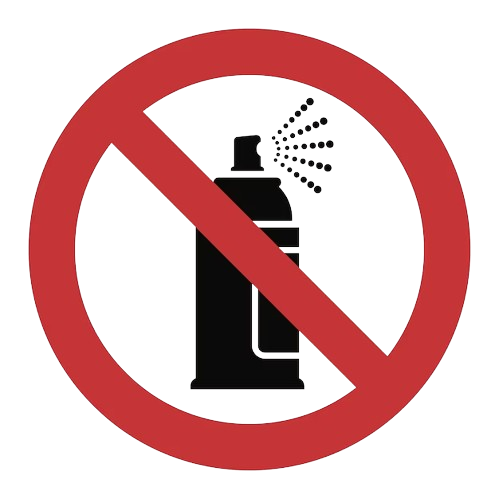
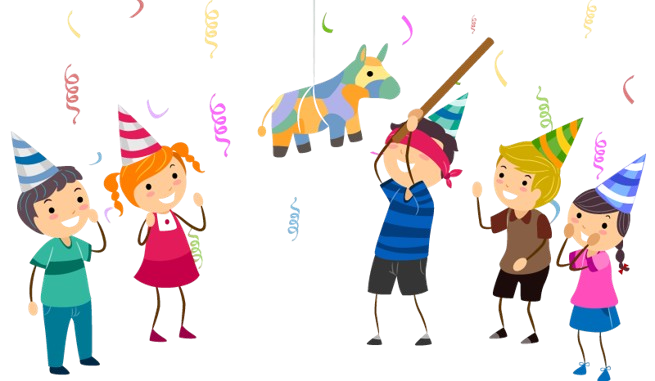

Las fiestas, ya sean formales, informales o incluso infantiles, suelen tener algunas reglas generales no escritas pero ampliamente entendidas que contribuyen a mantener un ambiente agradable y respetuoso. Aquí hay algunas de estas reglas comunes:
-
-
Es considerado de buena educación llegar a la fiesta a tiempo o con poca demora. Llegar tarde puede interrumpir los planes del anfitrión y causar incomodidad a otros invitados.
Puntualidad -
-
-
Es común llevar un regalo al anfitrión, especialmente en ocasiones como cumpleaños o cenas. Si es una fiesta en la que se comparten alimentos, llevar un plato o bebida para contribuir es bienvenido y muestra aprecio por la hospitalidad del anfitrión.
Regalos -
-
-
Al llegar, es cortés saludar al anfitrión y a otros invitados, así como agradecer por la invitación. Del mismo modo, despedirse al final de la fiesta, agradeciendo al anfitrión por su hospitalidad, es una norma de cortesía.
Saludo -
-
-
Es importante mantener el respeto por la propiedad del anfitrión y el espacio de la fiesta. Esto incluye no entrar en áreas restringidas, no tocar objetos personales sin permiso y no causar daños o desorden.

Respeto del resinto -
-
-
Si hay juegos, actividades o conversaciones grupales planificadas, participar activamente ayuda a mantener el ambiente animado y divertido para todos. Evitar aislarse o monopolizar la atención es importante para una buena dinámica social.

Participacion en las actividades -
-
-
Si se sirve alcohol en la fiesta, es importante consumirlo con moderación y de manera responsable. Beber en exceso puede alterar el ambiente de la fiesta y causar incomodidad o problemas.
Moderacion con el consumo del Alcohol -
-
-
Esto incluye moderar el volumen de la música o la conversación, respetar las normas de comportamiento socialmente aceptadas y ser considerado con los vecinos si la fiesta se lleva a cabo en un lugar residencial.
Respeto por las Normas de convivencia -